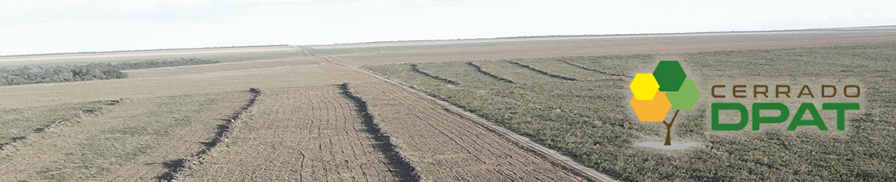

Documentação Plataforma da Rede de Articulação pela Restauração do Cerrado
O Cerrado Deforestation Polygon Assessment Tool (Cerrado DPAT) é uma ferramenta online e gratuita criada com o propósito de caracterizar as áreas desmatadas detectadas pelos sistemas PRODES-Cerrado e DETER-Cerrado. Atualmente é utilizada por gestores, pesquisadores e todos aqueles que necessitam de informações sobre o bioma, especialmente sobre as características do desmatamento e áreas naturais susceptíveis a este tipo de evento.
Essa é uma documentação para a plataforma Cerrado DPAT, desenvolvida pelo Laboratório de Processamento de Images e Geoprocessamento da Universidade Federal de Goiás (LAPIG/UFG) no âmbito do projeto Desenvolvimento de sistemas de prevenção de incêndios florestais e monitoramento da cobertura vegetal no Cerrado brasileiro financiado pelo Banco Mundial.